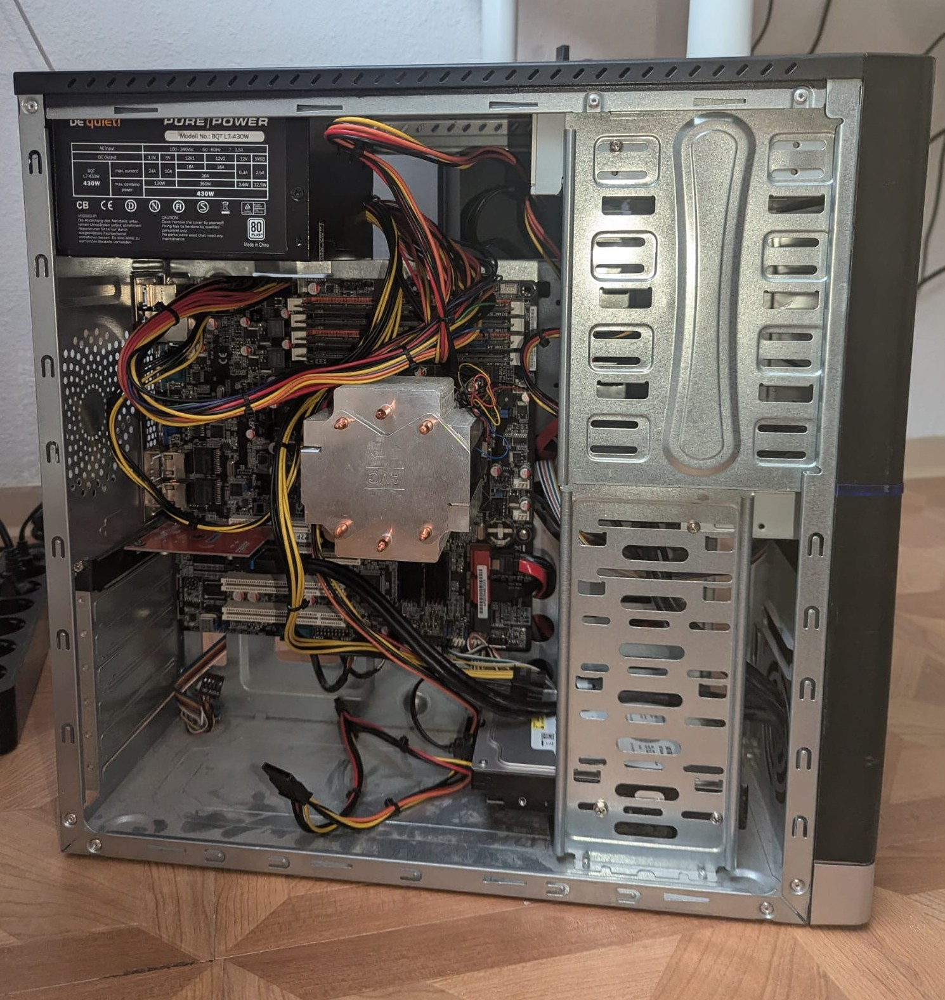

My Home Server


My home server is a versatile machine capable of hosting various services.
Hardware Specifications
- Motherboard: ASUS P7F-M uATX (featuring 6 SATA ports and multiple PCIe expansion slots)
- Processor: Intel Xeon X3450 (4 physical cores, 8 virtual cores with VT-x support)
- Memory & Storage: 16GB DDR3 RAM, 64GB SSD (for the OS), plus a 500GB hard drive.
- Case & Drives: ATX case with HDD/SSD slots and a DVD/CD drive (via SATA), letting me use disks for extra storage.
- Networking & Power: A direct Ethernet connection (also an extra USB Wi-Fi adapter for wireless connectivity), powered by a Be quiet! 430W PSU with standard cooling
Software & Services
- Operating System: Proxmox VE 9.2 runs as the hypervisor on my server letting me virtualize my hardware. It lets me split one physical machine into isolated virtual machines and lightweight LXC containers, each running independently with its own resources. Storage is split across the SSD (for the OS and services) and the HDD (for bulk data like NAS storage and ISO images).
- Website Hosting: Hosts this very website using Nginx. It also uses a webhook that gets changes from my Github repository when there is a change, so changes go live without manual restarts.
- NAS Storage: Acts as a local NAS using Open Media Vault in a dedicated virtual machine, letting me store and access files from any device at home.
- OpenWebRX: A publicly accessible software-defined radio (SDR) receiver that allows listening to radio signals via the connected SDR device.
- Wavelog Open-source software for logging amateur radio contacts and lets me integrate my logbook with other amateur radio applications. It also has a lot of other features and analytical tools.
- Pi-hole A DNS level ad blocker that filters ads on every device connected to my network automatically.
- Public Telnet Server: A terminal-accessible Telnet Bulletin Board System responding to specific commands; accessible via the demo page or by using a terminal with details found on the demo page.
- Remote Management: Fully accessible remotely via SSH and Proxmox.
Network Architecture & Public Access
Because my internet plan uses DS-Lite and lacks a public IPv4 address, I use two approaches to make my services public:
- Cloudflare Tunnel: Cloudflared runs in a dedicated LXC container on my Proxmox server, maintaining an encrypted connection to Cloudflare's edge. A single tunnel routes multiple public hostnames and paths to their respective services by internal IP and port.
- EC2 Socat Relay: Since Cloudflare Tunnel doesn't support public access for raw TCP protocols, a private encrypted Tailscale tunnel connects my home server to an AWS EC2 instance. Socat on the EC2 instance forwards direct TCP connections straight through to my home server's Tailscale IP.
- Webhooks and WebSocket Bridge: The Cloudflare Tunnel is also responsible for forwarding my websockets (for the Telnet server in browser) and my GitHub webhooks.